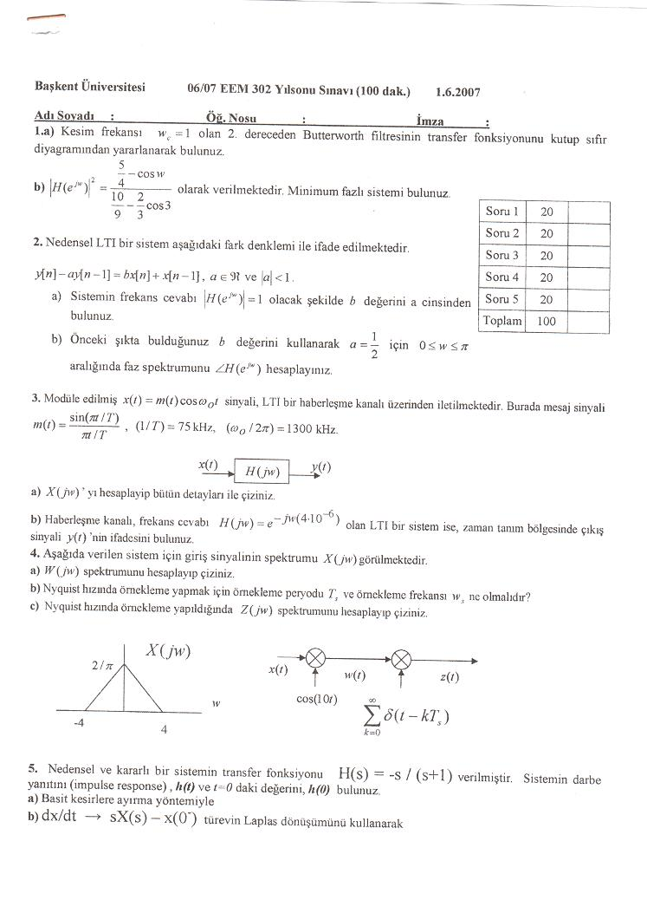
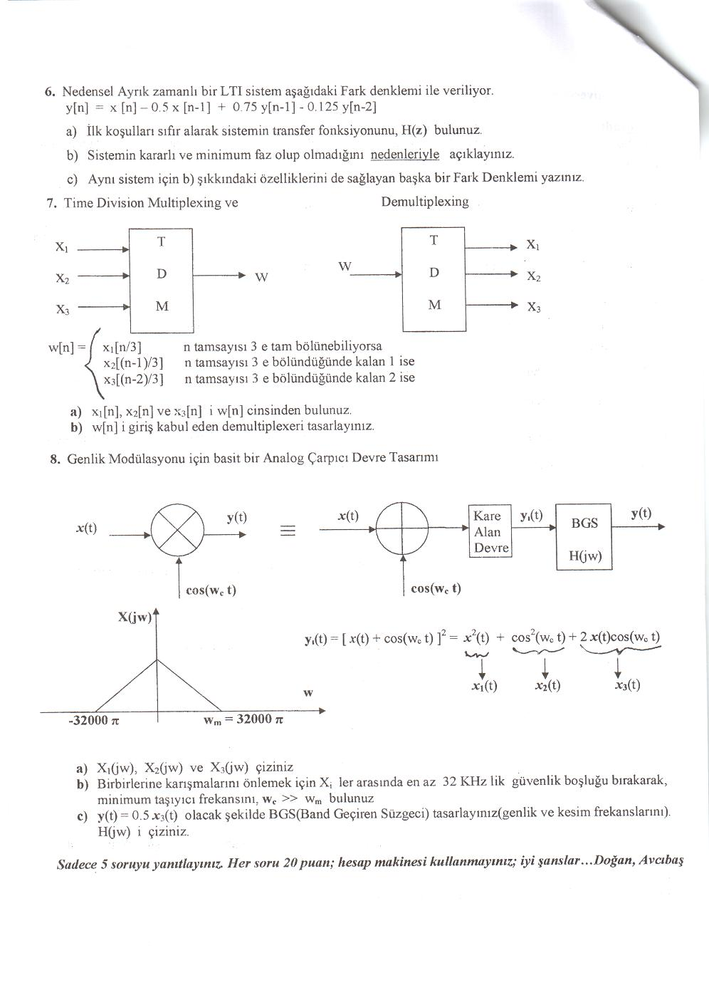

· EEM301
EEM301 Signals and Systems I: EEM 302 Final Exam (June 1, 2007), Solutions and Quizzes 4–5
EEM301 – Sinyaller ve Sistemler I · 01.06.2007 · 16.10.2026
This post contains the 2006–2007 final exam (1.6.2007, 100 minutes) of EEM 302, the follow-up course, which sits in the EEM301 Signals and Systems I folder. The exam paper was scanned blank (no student information); underneath it bears the signature "Doğan, Avcıbaş". Five of the eight questions are to be answered, each question is worth 20 points, and calculators are not allowed. The questions are transcribed below as text. The scans can be downloaded as a ZIP at the end of the post.
Questions
1. a) Find the transfer function of the 2nd-order Butterworth filter with cutoff frequency w_c = 1, using the pole-zero diagram. b) |H(e^(jw))|² = (5/4 − cos w) / (10/9 − (2/3) cos w) is given. Find the minimum-phase system.
2. A causal LTI system is described by the difference equation y[n] − a·y[n − 1] = b·x[n] + x[n − 1] (a real, |a| < 1). a) Find the value of b in terms of a such that the frequency response satisfies |H(e^(jw))| = 1. b) Using the value of b you found, compute the phase spectrum ∠H(e^(jw)) for a = 1/2 over the range 0 ≤ w ≤ π.
3. The modulated signal x(t) = m(t) cos ω₀t is transmitted over an LTI communication channel. The message signal is m(t) = sin(πt/T)/(πt/T), 1/T = 75 kHz, ω₀/2π = 1300 kHz. a) Compute X(jw) and sketch it in full detail. b) If the communication channel is an LTI system with frequency response H(jw) = e^(−jw·4·10⁻⁶), find the expression of the output signal y(t) in the time domain.
4. The spectrum X(jw) is a triangle between −4 and 4 with a peak value of 2/π. First x(t) is multiplied by cos(10t) to obtain w(t), and then by the impulse train Σ δ(t − kT_s) to obtain z(t). a) Compute and sketch the spectrum W(jw). b) What must the sampling period T_s and the sampling frequency w_s be in order to sample at the Nyquist rate? c) Compute and sketch the spectrum Z(jw) when sampling at the Nyquist rate.

Note: On the paper, the sum of the impulse train is written from k = 0 to ∞; for ideal sampling the sum should run from k = −∞ to ∞.
5. The transfer function of a causal and stable system is H(s) = −s/(s + 1). Find the impulse response h(t) of the system and its value at t = 0, h(0): a) using the partial fraction expansion method, b) using the Laplace transform of the derivative, dx/dt → sX(s) − x(0⁻).
6. A causal discrete-time LTI system is given by the difference equation y[n] = x[n] − 0.5x[n − 1] + 0.75y[n − 1] − 0.125y[n − 2]. a) Taking the initial conditions as zero, find the transfer function H(z) of the system. b) Explain, with reasons, whether the system is stable and minimum phase. c) Write another difference equation for the same system that also satisfies the properties in (b).
7. Time Division Multiplexing and demultiplexing. Three inputs x₁, x₂, x₃ are combined by TDM into a single signal w[n]:
- w[n] = x₁[n/3], if the integer n is divisible by 3
- w[n] = x₂[(n − 1)/3], if the remainder is 1 when n is divided by 3
- w[n] = x₃[(n − 2)/3], if the remainder is 2 when n is divided by 3
a) Find x₁[n], x₂[n] and x₃[n] in terms of w[n]. b) Design the demultiplexer that takes w[n] as its input.
8. Design of a simple analog multiplier circuit for amplitude modulation. The product x(t)·cos(w_c t) is obtained by passing the sum of x(t) and cos(w_c t) through a squarer and then through a bandpass filter (BPF, H(jw)): y₁(t) = [x(t) + cos(w_c t)]² = x²(t) + cos²(w_c t) + 2x(t)cos(w_c t) = x₁(t) + x₂(t) + x₃(t). X(jw) is a triangle between −32000π and w_m = 32000π. a) Sketch X₁(jw), X₂(jw) and X₃(jw). b) Find the minimum carrier frequency (w_c ≫ w_m), leaving a guard band of at least 32 kHz between the X_i's to prevent them from overlapping. c) Design the BPF (amplitude and cutoff frequencies) such that y(t) = 0.5x₃(t); sketch H(jw).

Solutions (from 2017 study sheets)
The folder also contains handwritten solutions written in 2017 while studying the same exam. Main results transcribed to text from the photographed pages:
- Question 2: For |H(e^(jw))| = |b + e^(−jw)| / |1 − a·e^(−jw)| = 1, we need b² + 2b cos w + 1 = 1 + a² − 2a cos w ⇒ b = −a. For a = 1/2 (b = −1/2), the numerator is (cos w − ½) − j sin w and the denominator is (1 − ½ cos w) + j½ sin w, so the phase is: ∠H(e^(jw)) = −arctan(sin w / (cos w − ½)) − arctan(½ sin w / (1 − ½ cos w)) (care must be taken with the quadrant of the numerator in the first arctan).
- Question 3: M(jw) is a rectangle of amplitude T for |w| < π/T; X(jw) = ½[M(j(w − w₀)) + M(j(w + w₀))], i.e. two rectangles centered at ±2π·1300 kHz. Since the channel is a pure delay, h(t) = δ(t − 4·10⁻⁶) and y(t) = x(t − 4·10⁻⁶).
- Question 4: W(jw) consists of copies of X(jw) shifted to ±10 with half amplitude (6 ≤ |w| ≤ 14); since the highest frequency is w_m = 14, the Nyquist sampling frequency is w_s = 28 rad/s, T_s = 2π/28 = π/14 s. Z(jw) consists of copies of W(jw) repeated at multiples of w_s.
- Question 5: H(s) = −s/(s + 1) = −1 + 1/(s + 1) ⇒ h(t) = e^(−t)u(t) − δ(t); at t = 0⁺, h(0) = 1. Using the derivative method: for g(t) = h(t) + δ(t), G(s) = 1/(s + 1), g(t) = e^(−t)u(t).
Note: On the solution sheet, 3(b) is written as y(t) = 2m(t − 4·10⁻⁶)·cos(2π·10⁶(t − 4·10⁻⁶)). Since cos w₀t = ½(e^(jw₀t) + e^(−jw₀t)), the factor of 2 is extra, and the carrier is 1300 kHz: the correct result is y(t) = m(t − 4·10⁻⁶)·cos(2π·1.3·10⁶(t − 4·10⁻⁶)).
Quiz 4 and Quiz 5 Solutions from the Same Study Session
Quiz 4 (z-transform):
- X(z) = 3z⁻³/(1 − ¼z⁻¹)², x[n] is left-sided. Writing X(z) = 12z⁻²·[−z d/dz (1/(1 − ¼z⁻¹))] and using n·x[n] ⟷ −z dX/dz together with the shift property, x[n] = −12(n − 2)(¼)^(n−2) u[−n + 1].
- x[n] = e^(n⁴)cos(πn/12)u[n] − e^(n⁴)cos(πn/12)u[n − 1] = e^(n⁴)cos(πn/12)·δ[n] = δ[n] ⇒ X(z) = 1.
Quiz 5 (frequency response and group delay): H(e^(jw)) = e^(−jw)(1 − ½e^(jw))/(1 − ½e^(−jw)).
- |H(e^(jw))| = |e^(−jw)|·|r*/r| = 1 (all-pass system).
- ∠H(e^(jw)) = −w − 2 tan⁻¹(½ sin w / (1 − ½ cos w)).
- grd(w) = −d∠H/dw = 1 + 2(½ cos w − ¼)/(5/4 − cos w).
- ∠H(e^(jπ/3)) = −π/3 − 2·(π/6) = −2π/3, grd(π/3) = 1 + 2·0 = 1.